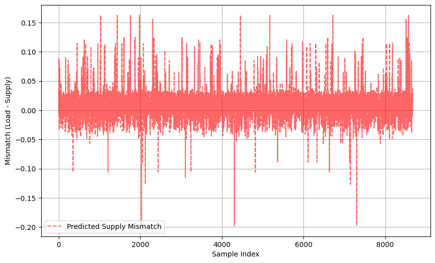

Neural Network for Electrical System
Dec 18, 2024 ・ 0 min read
This project focuses on developing a supervised learning regression model to predict the results of DC Optimal Power Flow (DC-OPF) in a 14-bus power system. Using historical DC-OPF solutions, the model is trained to estimate generator set points based on real-time power demand.
ML Approaches:
- ➡️ Feedforward Neural Networks (FNNs): Learn direct mappings between input features and outputs using historical data.
- ➡️ Graph Neural Networks (GNNs): Incorporate the underlying power grid topology to enhance prediction accuracy.
The model is formulated as a physics-informed neural network (Total Demand = Total Supply).
